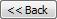

This Behaviour can be applied to controls and graphic elements (vectors) to typically allow users to change the value of a specific data element at runtime.
This change in value can be confirmed and/or logged to the event log, if necessary.
Note: This change in value is only made if the specified data element can be written to (i.e. if it is NOT read-only).
This Behaviour provides the following three methods of changing values at runtime:
Note: The selected value should be either Numeric or Boolean.
Note1: If a String data element is specified the Minimum and Maximum fields are IGNORED (although are still displayed).
Note2: Numerical values CANNOT be specified, at runtime, that do not comply with the specified Minimum and Maximum limits - in this case the Minimum and Maximum labels and their values become red until a valid numerical value is specified.
Data Element Set: To either specify another value (data element) or a static value to set this value.
Any subsequent change to the specified data element will change the input value.
Note: Ensure that the data of this value is compatible with the value you are configuring.
 To use a Control Action to change a value:
To use a Control Action to change a value:
Note: Any value lower than or equal to this value has no effect upon this Behaviour.
Note: It is at this value that the full transformation of the object occurs.
Click the browse button to the right of these edit boxes to select the required data elements, as follows:
This dialog displays a tree view of all the datasources and their data elements that are contained within the connected Servers, like that displayed by the Enterprise Manager.
The value selected initially by this browser is determined, as follows:
Tip: This is particularly helpful, when you are working with the SAME datasource, as it expands this datasource in the tree, highlighting the last browsed-in data element, which you can use as a reference.
The name of the currently selected data element is displayed at the bottom of this configuration dialog.
The Data Element Browser dialog provides the following features to assist you in this task of selecting the required value:
If the data element, in this Recently selected elements list, does not have an associated icon, then either this data element does not exist or, in the case of the Adroit datasource, that you have not opened the associated Agentgroup in the Adroit datasource tree and so if this data element is selected it will not be found in the Browser window.

button to return to the tree view.By default, to speed up searching on large Adroit Agent Server projects, the searching stops at the agent and not the slot level.
To increase the value by a specific amount:
To decrease the value by a specific amount:
To set the value to TRUE (non-zero): select Set Boolean True from the Control Action list box.
select Set Boolean True from the Control Action list box.
To set the value to FALSE (zero): select Set Boolean False from the Control Action list box.
To invert or toggle the Boolean state of the
value: select Toggle Boolean from the Control Action list box.
If necessary, click the Advanced View button to specify some or all of the following additional configurable options:
Confirmation: provide pre and/or post confirmation for this command, by checking one or both of the following checkboxes:
Confirm Change: pops up a yes/no confirmation message box before this change in value occurs.
If necessary, change the Message that this message box displays.
Log Change: logs (records) this change in value in the Application event log for forensic or audit trail purposes.
If necessary, change the Eventlog Message that this event displays.
Use the following placeholders to customise either of these messages:
Tip: The formatting of the {oldvalue} and {newvalue} values can be further customised to display decimals etc. For details, see Working with value formatting.
Note: By default these events are logged to the Application event log category on the default (login) SmartUI Server computer. If necessary, both the category name and/or computer on which these events are logged can be changed. For details, see General Server settings.
Security: ensure this action is only performed when the designated user/s and/or group/s are logged on, as follows:
Note: The user and group names in this string must be delimited by semi colons “;”.
Tip: Instead of using the buttons to move users and groups from the Available and Selected lists, you can simply double click them.
Event Trigger: specify which event of this control or graphic element (vector) triggers this Behaviour, as follows:
Tip: Click the Simple View button to hide these advanced options, if necessary.
To use a runtime Data Entry dialog to change a value:
Note: Any value lower than or equal to this value has no effect upon this Behaviour.
Note: It is at this value that the full transformation of the object occurs.
Click the browse button to the right of these edit boxes to select the required data elements, as follows:
This dialog displays a tree view of all the datasources and their data elements that are contained within the connected Servers, like that displayed by the Enterprise Manager.
The value selected initially by this browser is determined, as follows:
Tip: This is particularly helpful, when you are working with the SAME datasource, as it expands this datasource in the tree, highlighting the last browsed-in data element, which you can use as a reference.
The name of the currently selected data element is displayed at the bottom of this configuration dialog.
The Data Element Browser dialog provides the following features to assist you in this task of selecting the required value:
If the data element, in this Recently selected elements list, does not have an associated icon, then either this data element does not exist or, in the case of the Adroit datasource, that you have not opened the associated Agentgroup in the Adroit datasource tree and so if this data element is selected it will not be found in the Browser window.
By default, to speed up searching on large Adroit Agent Server projects, the searching stops at the agent and not the slot level.
as follows:The dialog title can use the following placeholders:
Note: No placeholders can be used in this text.
The Format field can align and/or format this value before it is displayed by this runtime data entry dialog, as follows:
The required formatting is defined as a string, which adheres to the following syntax: {0[,alignment][:dataFormat]}
either type in the required formatting string directly and/or
For further assistance on creating format strings, see String formatting syntax.
If necessary, click the Advanced View button to specify some or all of the following additional configurable options:
Confirmation: provide pre and/or post confirmation for this command, by checking one or both of the following checkboxes:
Confirm Change: pops up a yes/no confirmation message box before this change in value occurs.
If necessary, change the Message that this message box displays.
Log Change: logs (records) this change in value in the Application event log for forensic or audit trail purposes.
If necessary, change the Eventlog Message that this event displays.
Use the following placeholders to customise either of these messages:
Tip: The formatting of the {oldvalue} and {newvalue} values can be further customised to display decimals etc. For details, see Working with value formatting.
Note: By default these events are logged to the Application event log category on the default (login) SmartUI Server computer. If necessary, both the category name and/or computer on which these events are logged can be changed. For details, see General Server settings.
Security: ensure this action is only performed when the designated user/s and/or group/s are logged on, as follows:
Note: The user and group names in this string must be delimited by semi colons “;”.
Tip: Instead of using the buttons to move users and groups from the Available and Selected lists, you can simply double click them.
Event Trigger: specify which event of this control or graphic element (vector) triggers this Behaviour, as follows:
Tip: Click the Simple View button to hide these advanced options, if necessary.
To specify another Data Element or static value to Set a value:
Note: Any value lower than or equal to this value has no effect upon this Behaviour.
Note: It is at this value that the full transformation of the object occurs.
Click the browse button to the right of these edit boxes to select the required data elements, as follows:
This dialog displays a tree view of all the datasources and their data elements that are contained within the connected Servers, like that displayed by the Enterprise Manager.
The value selected initially by this browser is determined, as follows:
Tip: This is particularly helpful, when you are working with the SAME datasource, as it expands this datasource in the tree, highlighting the last browsed-in data element, which you can use as a reference.
The name of the currently selected data element is displayed at the bottom of this configuration dialog.
The Data Element Browser dialog provides the following features to assist you in this task of selecting the required value:
If the data element, in this Recently selected elements list, does not have an associated icon, then either this data element does not exist or, in the case of the Adroit datasource, that you have not opened the associated Agentgroup in the Adroit datasource tree and so if this data element is selected it will not be found in the Browser window.
By default, to speed up searching on large Adroit Agent Server projects, the searching stops at the agent and not the slot level.
If necessary, click the Advanced View button to specify some or all of the following additional configurable options:
Confirmation: provide pre and/or post confirmation for this command, by checking one or both of the following checkboxes:
Confirm Change: pops up a yes/no confirmation message box before this change in value occurs.
If necessary, change the Message that this message box displays.
Log Change: logs (records) this change in value in the Application event log for forensic or audit trail purposes.
If necessary, change the Eventlog Message that this event displays.
Use the following placeholders to customise either of these messages:
Tip: The formatting of the {oldvalue} and {newvalue} values can be further customised to display decimals etc. For details, see Working with value formatting.
Note: By default these events are logged to the Application event log category on the default (login) SmartUI Server computer. If necessary, both the category name and/or computer on which these events are logged can be changed. For details, see General Server settings.
Security: ensure this action is only performed when the designated user/s and/or group/s are logged on, as follows:
Note: The user and group names in this string must be delimited by semi colons “;”.
Tip: Instead of using the buttons to move users and groups from the Available and Selected lists, you can simply double click them.
Event Trigger: specify which event of this control or graphic element (vector) triggers this Behaviour, as follows:
Tip: Click the Simple View button to hide these advanced options, if necessary.
Tip1: When adding a Behaviour to a SmartUI TemplateA graphic form that has one or more configured aliases and is therefore designed to be displayed within a TemplateGO control. , you can use {} notation to automatically create an alias for any data element field. For more details, see Working with SmartUI Templates.
Tip2: When adding a Behaviour to a wizardA pre-drawn and/or pre-configured skeleton of graphical objects and their assigned Behaviours (if any), which has placeholders (substitutions) for data elements., you can use {} notation to automatically create a substitution for any data element field. For more details, see Working with wizards.
To add a Behaviour to a control or graphic element:
Ensure that you have added the required control or graphic element to the graphic form.
If necessary, select the Behaviours tab from the SmartUI Designer ribbon.
Note: Any Behaviour that cannot be applied to this control or graphic element will be greyed out.
Tip: You can also select its  glyph to display its task menu and then select the required Behaviour from the New
Behaviour drop down list.
glyph to display its task menu and then select the required Behaviour from the New
Behaviour drop down list.
This displays the configuration dialog of this Behaviour.
Tip: When you add or edit a Behaviour you can name it, which makes it easier to identify the spiders and their regions associated with your Behaviours.
To edit a Behaviour of a control or graphic
element:
Tip: You can also select its  glyph to display its task menu and then select the required link beneath the Behaviours
heading.
glyph to display its task menu and then select the required link beneath the Behaviours
heading.
This displays the configuration dialog of this Behaviour.
Tip: The Behaviours tab of the SmartUI Designer ribbon provides the Edit Behaviour list box that lists all the Behaviours configured for the currently selected form component. Clicking its browse button displays the configuration dialog of the currently selected behaviour.
To remove one or more added Behaviours from a control or graphic
element:
If necessary, select the Behaviours tab from the SmartUI Designer ribbon.
Tip: You can also select its  glyph to display its task menu and then select the Removelink beneath the Behaviours
heading.
glyph to display its task menu and then select the Removelink beneath the Behaviours
heading.
This displays the Behaviour Removal configuration dialog.
WARNING! Ensure that ONLY the Behaviour/s you do not require is selected, since no deletion confirmation dialogs are displayed.